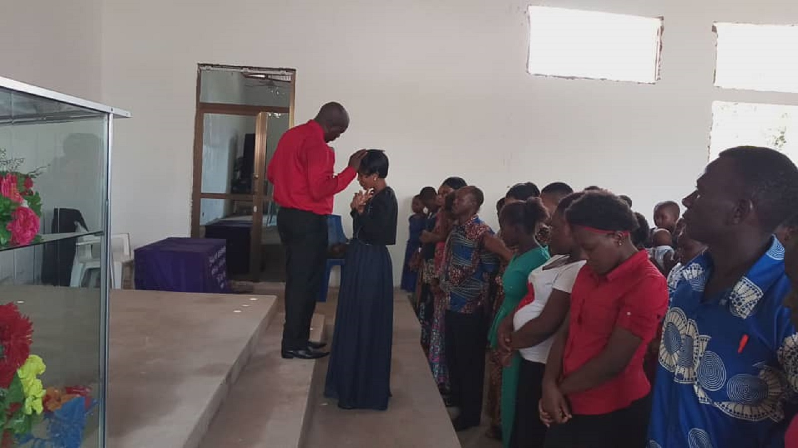

Kila uso una nafasi katika nyumba ya Bwana. Tazama nyakati zetu za maombezi, mafundisho na ibada kuu.

Katika kuwafungua watu kutoka katika vifungo vya shetani. Angalia matukio zaidi kwenye Gallery.
Kuwafungua watu kutoka katika vifungo vya shetani.
Ushauri wa kiroho kwa washirika na wageni wote wanaokuja.
Kujifunza Biblia kwa kina kila Jumatano.
Kujifunza kuishi maisha matakatifu kila siku.
Tunaandaa matangazo ya matukio yajayo kanisani — tafadhali fuatilia ukurasa huu au jiunge na channel yetu ya YouTube kwa taarifa mpya.
Shuhuda za waumini wetu zinakuja hivi karibuni. Una shuhuda? Tuma kupitia fomu yetu ya mawasiliano.
Tuma Shuhuda